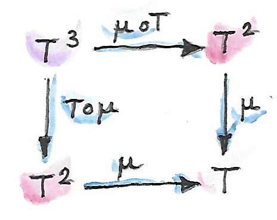
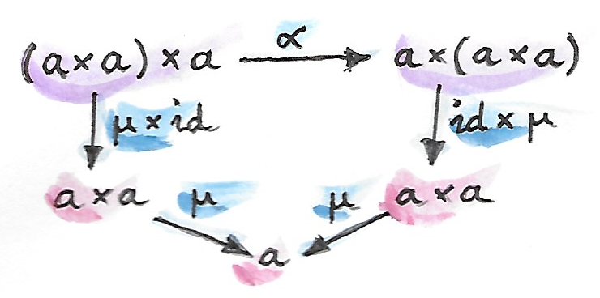

23 MonadในแบบCategory (Sketch)
ถ้าคุณกล่าวถึงmonadกับโปรแกรมเมอร์ คุณจะจบลงที่การพูดคุยเกี่ยวกับผลตามมา(effect) กับนักคณิตศาสตร์แล้ว monadนั้นเกี่ยวกับพีชคณิต เราจะมาพูดเกีี่ยวกับพีชคณิตหหลังจากนี้ (พวมมันมีหน้าที่ที่สำคัญในการเขียนโปรแกรม) แต่ก่อนอื่นผมอยากที่จะในวิธีคิดเล็กๆกับคุณเกี่ยวกับความสัมพันธ์กับmonad ในตอนนี้มันจะเป็นเหตุผลที่ไม่รัดกุมแต่ ลองอดทนกับผม
พีชคณิตนั้นเกี่ยวกับหหการสร้าง การควบคุม และการประเมินสูตร สูตรนั้นสร้างโดนการใช้operator ลองพิจารณาสูตรที่เรียบง่ายนี้
\[ x^2 + 2 x + 1 \]
สูตรนี้สร้างโดยการใช้ตัวแปรอย่าง\(x\)และค่าคงที่อย่าง\(1\)หรือ\(2\)ที่อยู่ด้วยกันผ่านoperatorอย่างการบวกและการลบ ในฐานะโปรแกรมเมอร์ เรามักจะคิดถึงสูตรในฐานะtree
Treeนั้นคือภาชนะดังนั้นโดนทั่วไปแล้วสูตรคือภาชนะสำหรับการเก็บตัวแปล ในทฤษฎีcategoryเราแทนภาชนะด้วยendofunctors ถ้าเรากำหนดtype\(a\)ไปยังตัวแปล\(x\) สูตรของเรานั้นจะมีtype \(m \ a\) ที่ \(m\) คือendofunctorที่สร้างtreeของสูตร (การแตกแขนงของสูตรที่ไม่ตรงไปตรงมานั้นมักจะถูกสร้างโดนการใช้endofunctorที่ถูกนิยามแบบrecursive)
อะไรคือการกระทำที่ทั่วไปที่สุดที่สามารถกระทำบนสูตรได้? มันคือการแทนที่อย่างการแทนตัวแปรกับด้วยสูตร ตัวอย่างเช่นในตัวอย่างของเรา เราอาจจะแทน\(x\)ด้วย\(y-1\)เพื่อที่จะได้
\[ (y - 1)^2 + 2 (y - 1) + 1 \]
นี้คือสิ่งที่เกิดขึ้นคือ เรานำสูตรของtype\(m \ a\)และใช้การแปลงของtype\(a\rightarrow m \ b\)(ที่\(b\)เป็นตัวแทนของtypeของ\(y\)) ผลที่ตามมาคือสูตรของtype\(m \ b\)ให้ผมได้เขียนออกมา
\[ m\ a \to (a \to m\ b) \to m\ b \]
ใช้นั้นคือsignatureของbindแบบmonadic
นั้นคือแรงจูงใจเล็กน้อย ในตอยนี้เรามาไปยังคณิตศาสตร์ของmonad นักคณิตศาสตร์ใช้เครื่องหมายที่แตกต่างกับโปรแกรมเมอร์ พวกเขาชอบมากกว่าที่จะใช้พยัญชนะ\(T\)สำหรับendofunctor และพยัญชนะGreek \(\mu\)สำหรับjoinและ\(\eta\)สำหรับreturn ทั้งjoinและreturnคือfunctionแบบpolymorphic ดังนั้นเราสามารถเด่าได้ว่าพวกมันตรงกับการแปลงแบบธรรมชาติ
ดังนั้นในทฤษฎีcategory monadนั้นถูกนิยามในฐานะendofunctor\(T\)ที่มีคู่ของการแปลงแบบธรรมชาติ\(\mu\)และ\(\eta\)
\(\mu\)คือการแปลงแบบธรรมชาติจากการยกกำลังสองของfunctor\(T^2\)ไปยัง\(T\) การยกกำลังสองนั้นแค่คือfunctorที่ประกอบกับตนเองอย่าง\(T\circ T\) (เราสามารถที่ทำการยกกำลังสองอย่างนี้ได้สำหรับendofunctorsทำนั้น)
\[ \mu :: T^2 \to T \]
ส่วนประกอบของการแปลงแบบธรรมชาตินี้ที่วัตถุ\(a\)คือmorphism
\[ \mu_a :: T (T a) \to T a \]
ที่ใน\(\textbf{Hask}\)แปลโดยตรงไปยังนิยามjoinของเรา
\(\eta\)คือการแปลงแบบธรรมชาติระหว่างfunctor identity\(I\)และ\(T\)อย่าง
\[ \eta :: I \to T \]
ในการพิจารณาถึงการกระทำของ\(I\)ไปยังวัตถุ\(a\)นั้นคือแค่\(a\) ส่วนประกอบของ\(\eta\)นั้นให้มาโดยmorphismนี้
\[ \eta_a :: a \to T a \]
ที่แปลโดยตรงไปยังนิยามreturnของเรา
การแปลงแบบธรรมชาติเหล่านี้ต้องบรรลุกฏเพิ่มเติมบางข้อ ในทางหนึ่งในการมองมันคือว่ากฏเหล่านี้อนุญาตให้เราได้นิยามcategoryแบบKleisliสำหรับendofunctor\(T\) จำได้ว่าลูกศรKleisliระหว่าง\(a\)และ\(b\)นั้นถูกนิยามในฐานะmorphism\(a\rightarrow Tb\) การประกอบกันของสองลูกศรอย่างนี้(ผมจะเขียนมันในฐานะวงกลมกับ\(T\)ที่ถูกเขียนข้างใต้)สามารถถูกเขียนโดยการใช้\(\mu\)
\[ g \circ_T f = \mu_c \circ (T\ g) \circ f \]
ที่
\[ \begin{gather*} f :: a \to T\ b \\ g :: b \to T\ c \end{gather*} \]
ในที่นี้\(T\)ที่เป็นfunctorสามารถถูกใช้ไปยังmorphism\(g\) มันอาจจะง่ายกว่าในการจำสูตรได้ในสัญลักษณ์ของHaskell
f >=> g = join . fmap g . fหรือในส่วนประกอบ
(f >=> g) a = join (fmap g (f a))ในรูปแบบของการตีความแบบพีชคณิต เราแค่ประกอบการแทนที่ที่ติดต่อกัน
สำหรับลูกศรKleisliที่ก่อให้เกิดcategory เราต้องให้การประกอบกันนั้นมีคุณสมบัติการเปลี่ยนหมู่ และ\(\eta_a\)เป็นลูกศรKleisliที่เป็นidentityที่\(a\) ความต้องการนี้สามารถถูกแปลไปยังกฏของmonadสำหรับ\(\mu\)และ\(\eta\) แต่ได้มีอีกวิธีหนึ่งในการได้กฏเหล่านี้มาที่ทำให้พวมมันดูเหมือนกับกฏmonoid ในความเป็นจริงแล้ว\(\mu\)ถูกเรียกว่าmultiplicationและ\(\eta\)ว่าunit
พูดแบบคร่าวๆ กฏของการเปลี่ยนหมู่บอกว่าสองวิธีของการลดกำลังสามของ\(T\)อย่าง\(T^3\)ไปยัง\(T\)ต้องให้ผลลัพธ์เดียวกัน กฎของunitทั้งสอง(ค้านช้ายและขวา)บอกว่าในตอนที่\(\eta\)ถูกใช้ไปยัง\(T\)และก็ถูกลดโดย\(\mu\)เราก็ได้\(T\)กลับมา
สิ่งที่จะชับช้อนนิดหน่อยเพราะว่าเรากำลังประกอบการแปลงแบบธรรมชาติและfunctor ดั้งนั้นการทบทวนของการประกอบแนวนอนนั้นก็จะตามมา ตัวอย่างเช่น\(T^3\)สามาถถูกมองในฐานะการประกอบของ\(T\)หลัง\(T^2\) เราสามารถใช้การประกอบแนวนอนของสองการแปลงแบบธรรมชาติกับมันว่า
\[ I_T\circ\mu \]

และได้\(T\circ T\)มาที่สามารถถูกลดลงไปถึง\(T\)โดยการใช้\(\mu\) \(I_T\)ที่เป็นการแปลงแบบธรรมชาติแบบidentityจาก\(T\)ไปยัง\(T\) คุณมักจะเห็นเครื่องหมายสำหรับtypeนี้ของการประกอบกันแนวนอน\(I_T\circ\mu\)ที่เขียนให้สั้นโดย\(T\circ\mu\) เครื่องหมายแบบนี้นั้นไม่ครุมเครือเพราะว่ามันไม่สมเหตุสมผลในการประกอบfunctorกับการแปลงแบบธรรมชาติ ดังนั้น\(T\)ต้องหมายถึง\(I_T\)ในบริบทนี้
เราสามารถวาดdiagramในcategoryของ(endo-)functor\([\textbf{C},\textbf{C}]\)ได้ว่า

ในอีกทางหหนึ่งเราสามารถมอง\(T^3\)ในฐานะการประกอบกันของ\(T^2\circ T\)และใช้งาน\(\mu \circ T\)ไปยังมัน ผลที่ตามคือ\(T\circ T\)ที่ในอีกครั้งสามารถถูกลดไปยัง\(T\)โดยการใช้\(\mu\) เราต้องการว่าสองทางนี้ก่อให้เกิดผลเดียวกัน

ในทางเดียวกัน เราสามรถใช้การประกอบในแนวนอน\(\eta\circ T\)ไปยังการประกอบกันของfunctor identity\(I\)หลัง\(T\)ในการได้มาที่\(T^2\)ที่สามารถถูกลดโดยการใช้\(\mu\) ผลที่ตามาควรที่จะเป็นเหมือนเดิมกันถ้าเราใช้การประกอบแบบธรรมชาติแบบidentityโดยตรงไปยัง\(T\) และในแบบเดียวกันสิ่งที่เหมือนกันควรที่จะเป็นจริงสำหรับ\(T\circ\eta\)

คุณสามารถที่จะทำให้มั่นใจเองว่ากฏเหล่านี้รับประกันว่าการประกอบกันของลูกศรKleisliนั้นบรรลุกฏของcategoryอย่างแน่นอน
ความเหมือนกันระหว่างmonadและmonoidนั้นน่าตกใจ เรามีการคูณ\(\mu\) unit\(\eta\) กฏการเปลี่ยนหมู่และunit แต่นิยามของmonoidนั้นแคบเกินไปในการอธิบายmonadในฐานะmonoid ดังนั้นเรามาgeneralizeแนวคิดของmonoid
23.1 CategoriesแบบMonoidal
เรากับมาที่นิยามทั่วๆไปของmonoid มันคือsetกับopeartionแบบbinaryและสมาชิกพิเศษที่เรียกว่าunit ในHaskellสิ่งนี้สามารถถูกแสดงออกมาในฐานะtypeclassว่า
class Monoid m where
mappend :: m -> m -> m
mempty :: mopeartionแบบbinarymappendต้องสามารถเปลี่ยนหมู่ได้และมีความunital(นั้นก็คือในการคูณกับunitmemptyนั้นไม่มีผล)
สังเกตได้ว่าในHaskellนิยามของmappendนั้นถูกcurried มันสามารถถูกตีความในฐานะการโยงทุกๆสมาชิกของmไปยังfunction
mappend :: m -> (m -> m)การตีความนี้ที่ก่อให้เกิดนิยามของmonoidในฐานะcategoryที่มีวัตถุเดี่ยวที่endomorphisms(m -> m)ที่เป็นตัวแทนสมาชิกของmonoid แต่เพราะว่าการcurryนั้นถูกสร้างภายในHaskell เราก็อาจจะเริ่มด้วยนิยามที่แตกต่างของการคูณ
mu :: (m, m) -> mในที่นี้productแบบCartesian(m, m)กลายมาเป็นแหล่งของpairsที่จะถูกคูณ
นิยามนี้ได้ให้แนวทางที่แตกต่างของการgeneralizeคือการแทนที่productแบบCartesianด้วยproductแบบcategorical เราอาจจะเริ่มด้วยcategoryที่productsนั้นถูกนิยามแบบสากล เลือกวัตถุmจากในนั้นและนิยามการคูณในฐานะmorphism
\[ \mu :: m\times{}m \to m \]
แต่เรามีอยู่หนึ่งปัญหาคือในcategoryทั่วไปเราไม่สามารถที่จะส่องเข้าไปในวัตถุ ดังนั้นแล้วเราจะเลือกสมาชิกunitอย่างไร ได้มีเคล็ดลับอยู่ จำได้ในวิธีการเลือกสมาชิกนั้นเท่ากับfunctionจากsetที่มีสมาชิกเดียว? ในHaskell เราสามารถแทนที่นิยามของmemptyกับfunctionว่า
eta :: () -> mในsetที่มีสมาชิกเดียวคือวัตถุสุดท้ายใน\(\textbf{Set}\)ดังนั้นมันเป็นธรรมชาติที่จะทำการgeneralizeนิยามนี้ไปยังcategoryใดๆก็ตามที่มีวัตถุสุดท้าย\(t\)
\[ \eta :: t \to m \]
สิ่งนี้อนุญาติให้เราเลือก”สมาชิก”unit โดยที่ไม่ต้องพูดเกี่ยวกับสมาชิก
ไม่เหมือนกับนิยามmonoidก่อนหน้าของเราในฐานะcategoryที่มีสมาชิกเดียว กฏของmonoidนั้นไม่ถูกบรรลุอย่างอัตโนมัติ (เราต้องบังคับพวกมัน) แต่ในการกำหนดสูตรของพวกมัน เราได้ก่อตั้งโครงสร้างทางmonoidของการคูณแบบcategoryมันเอง เรามาคืนความทรงจำในวิธีการที่โครงสร้างทางmonoidทำงานในHaskellก่อน
เราเริ่มด้วยการสลับหมู่ ในHaskellกฏของความเท่ากันที่ตรงกับสิ่งนี้คือ
mu (x, mu (y, z)) = mu (mu (x, y), z)ก่อนที่เราจะทำการgeneralizeมันไปยังcategoryอื่นๆ เราต้องเขียนมันใหม่ในฐานะความเท่ากันของfunctions (morphisms) เราต้องabstractมันออกจากการกระทำของมันบนแต่ละตัวแปล (หรือในอีกความหมายหนึ่ง เราต้องใช้เครื่องหมายที่ไม่มีจุด) รู้ว่าproductแบบCartesianนั้นคือbifunctor เราสามารเขียนทางด้านช้ายว่า
(mu . bimap id mu)(x, (y, z))และในด้านขวาว่า
(mu . bimap mu id)((x, y), z)นั้นเกือบเป็นเหมือนที่เราต้องการ แต่น่าเสียดายที่productแบบCartesianนั้นไม่สลับกลุ่มจริงๆ ((x, (y, z))นั้นไม่เหมือนกับ((x, y), z)) ดังนั้นเราไม่สามารถที่จะแค่เขียนแบบไร้จุด
mu . bimap id mu = mu . bimap mu idในอีกทางหนึ่ง สองpairในpairสองตัวนั้นisomorphicกัน ได้มีfunctionที่สามารถinvertibleได้ที่เรียกว่าassociatorที่แปลงระหว่างพวกมัน
alpha :: ((a, b), c) -> (a, (b, c))
alpha ((x, y), z) = (x, (y, z))กับความช่วยเหลือของassociator เราสามารถเขียนกฏของการสลับหมู่แบบไร้จุดได้สำหรับmu
mu . bimap id mu . alpha = mu . bimap mu idเราสามารนำเคล็ดลับแบบเดียวกันกับกฏของunitที่ ในเครื่องหมายใหม่มีรูปร่างอย่าง
mu (eta (), x) = x
mu (x, eta ()) = xพวกมันสามารถถูกเขียนใหม่ว่า
(mu . bimap eta id) ((), x) = lambda((), x)
(mu . bimap id eta) (x, ()) = rho (x, ())isomorphismsอย่างlambdaและrhoนั้นถูกเรียกว่าunitorช้ายและขวาตามลำดับ พวกมันบ่งบอกความจริงที่ว่าunit()นั้นคือidentityของproductแบบCartesianขึ้นไปยังisomorphism
lambda :: ((), a) -> a
lambda ((), x) = xrho :: (a, ()) -> a
rho (x, ()) = xดังนั้นรูปแบบไร้จุดของกฏunitนั้นคือ
mu . bimap id eta = rho
mu . bimap eta id = lambdaเราได้กำหนดสูตรของกฏของmonoidalที่ไร้จุดสำหรับmuและetaโดยการใช้ความจริงที่ว่าproductแบบCartesian ตัวมันเองกระทำเหมือนการคูณแบบmonoidalข้างในcategoryของtypes แต่จงจำไว้ว่ากฏของการสลับหมู่และunit สำหรับproductแบบCartesianนั้นถูกต้องไปแค่ยังisomorphism
มันกลายมาเป็นว่ากฏเหล่านี้สามารถถูกgeneralizeไปยังcategoryใดๆก็ตามที่มีproductsและวัตถุสุดท้าย productsแบบcategoryนั้นแน่นอนว่าสลับหมู่ได้ไปยังisomorphismแลวัตถุสุดท้ายนั้นคือunit และก็ไปยังisomorphism associatorและสองunitorsนั้นคือisomorphismsแบบธรรมชาติ กฏเหล่านี้สามารถถูกแสดงออกมาในcommuting diagramsนี้

สังเกตว่า เหราะว่าproductนั้นเป็นbifunctor เราสามารถliftคู่ของmorphisms (ในHaskellสิ่งนี้สามารถทำได้โดยการใช้bimap)
เราสามารถหยุดในที่นี้และบอกว่าเราสามารถนิยามmonoidบนcategoryใดๆก็ตามที่มีproductsและวัตถุสุดท้าย ตราบเท่าที่เราสามารถเลือกวัตถุ\(m\)และสองmorphisms\(\mu\)และ\(\eta\)ที่บรรลุกฏทางmonoidalเราก็จะมีmonoid แต่เราสามารถทำได้ดีกว่านี้ เราไม่ต้องการproductแบบcategorical ทั้งหมดในการกำหนดกฏสำหรับ\(\mu\)และ\(\eta\) จำได้ว่าproductนั้นถูกนิยามผ่านการสร้างแบบสากลที่ใช้projections เรายังไม่ได้ใช้projectionsอะไรเลยในการกำหนดกฏทางmonoidal
bifunctorนั้นมีประพฤติเหมือนproductโดยที่ไม่เป็นproduct นั้นเรียกว่าproductแบบtensor มักจะทีเครื่องหมายโดยoperator\(\otimes\)แบบinfix นิยามของproductแบบtensorโดยทั่วไปนั้นค่อนข้างชับช้อน แต่เราไม่ต้องกังวลกับมัน เราแค่จะให้คุณสมบัติของมัน(สิ่งที่สำคัญที่สุดคือสลับหมู่ได้ไปยังisomorphism)
ในทางเดียวกัน เราไม่ต้องการให้วัตถุ\(t\)เป็นสิ่งสุดท้าย เราไม่เคยที่ใช้คุณสมบัติความเป็นสิ่งสุดท้าย (โดนเฉพาะการมีอยู่ของmorphismที่เป็นเอกลักษณ์จากวัตถุใดๆก็ตามไปยังมัน) สิ่งที่เราต้องการคือการที่ว่ามันทำงานได้คู่กับproductแบบtensorได้ไปยังisomorphismในอีกครั้ง เรามารวมมันเข้าด้วยกัน
categoryแบบmonoidalนั้นคือcategory\(\textbf{C}\)ที่มีbifunctorที่เรียกว่าproductแบบtensor
\[ \otimes :: \cat{C}\times{}\cat{C} \to \cat{C} \]
และวัตถุ\(i\)เดี่ยวที่เรียกว่าวัตถุunitคู่กับisomorphismsธรรมชาติที่เรียกว่าassociatorและunitorsช้ายและขวาตามลำดับ
\[ \begin{align*} \alpha_{a b c} & :: (a \otimes b) \otimes c \to a \otimes (b \otimes c) \\ \lambda_a & :: i \otimes a \to a \\ \rho_a & :: a \otimes i \to a \end{align*} \]
(ได้มีเงื่อนไขของความสอดคล้องในการทำให้productแบบtensorแบบquadrupleนั้นง่ายขึ้น)
สิ่งที่สำคัญคือการที่productแบบtensorอธิบายหลายbifunctorsที่คุ้นเคย โดยเฉพาะเช่น มันทำงานได้สำหรับproduct coproductและในที่จะเห็นในไม่ช้า สำหรับการประกอบกันของendofunctors (และก็สำหรับproductsที่แปลกๆอย่างconvolutionแบบDay) categoryแบบmonoidalจะมีหน้าที่ที่สำคัญในการกำหนดcategoryตกแต่ง (enriched categories)
23.2 Monoidในcategoryแบบmonoidal
เรานั้นพร้อมแล้วในการนิยามmonoidในสถานการที่ทั่วไปมากขึ้นของcategoryแบบmonoidal เราเริ่มมาจากการเลือกวัตถุ\(m\) โดนการใช้productแบบtensor เราสามารถสร้างการยกกำลังของ\(m\) การยกกำลังสองของ\(m\)คือ\(m\otimes m\) ได้มีสองวิธีในการสร้างการยกกำลังสามของ\(m\)แต่พวกมันนั้นisomorphicผ่านassociator ในทางเดียวกันสำหรับการยกกำลังในระดับที่มากกว่าของ\(m\) (ในที่เราต้องการเงื่อนไขความสอดคล้อง) ในการสร้างmonoid เราต้องการที่จะเลือกสองmorphisms
\[ \begin{align*} \mu & :: m \otimes m \to m \\ \eta & :: i \to m \end{align*} \]
ที่\(i\)คือวัตถุobjectสำหรับproductแบบtensorของเรา

morphismsเหล่านี้ต้องบรรลุกฏของการสลับกลุ่มและunitที่สามารถถูกแสดงออกมาในรูปแบบของcommuting diagramsดังนี้


สังเกตว่ามันสำคัญในการที่ว่าproductแบบtensorนั้นเป็นbifunctorเพราะว่าเราจำเป็นต้องliftคู่ของmorphismsในการสร้างproductsอย่าง\(\eta\otimes\operatorname{id}\)หรือ\(\operatorname{id}\otimes\eta\) diagramsเหล่านี้นั้นเป็นแค่การgeneralizeแบบตรงไปตรงมาของผลลัพธ์ก่อนหน้านี้สำหรับproductsแบบcategory
23.3 MonadsในฐานะMonoids
โครงสร้างทางmonoidalโผล่มาในที่ที่ไม่คาดถึง ที่แบบนี้คือในcategoryของfunctor ถ้าคุณลองมองไม่มาก็น้อย คุณอาจจะสามารถที่จะเห็นการประกอบกันของfunctorในฐานะรูปแบบของการคูณ ปัญหาคือการที่ว่าไม่ได้ทุกfunctorสามารถถูกแปะกอบกันได้ (categoryเป้าหมายต้องเป็นcategoryเริ่มต้น นั้นแค่คือกฏทั่วๆไปของmorphisms) และในที่ที่เรารู้แล้ว functorsนั้นคือmorphismsในcategory\(\textbf{Cat}\) แต่ก็เหมือนกับendomorphisms(morphismsที่กลับมายังวัตถุเดียวกัน)นั้นประกอบกันได้ตลอด endofunctorsก็เช่นกัน ในcategory\(\textbf{C}\)ที่ให้มา endofunctorsจาก\(\textbf{C}\)ไปยัง\(\textbf{C}\)ก่อให้เกิดcategoryแบบfunctor\([\textbf{C},\textbf{C}]\) วัตถุของมันนั้นคือendofunctorsและmorphismsนั้นคือการแปลงแบบธรรมชาติระหว่างมัน เราสามารถนำสองวัตถุจากcategoryนี้ อย่างendofunctors\(F\)และ\(G\) และสร้างวัตถุที่สามอย่าง\(F\circ G\) (endofunctorนั้นคือการประกอบกันของพวกมัน)
การประกอบกันของendofunctorนั้นคือสิ่งที่มีคุณสมบัติสำหรับproductแบบtensorหรือเปล่า? ในตอนแรกเราต้องการที่จะพิสูจน์ว่ามันคือbifunctor มันสามารถถูกใช้ในการliftคู่ของmorphismsในที่นี้คือการแปลงแบบธรรมชาติ? signatureในแบบของbimapสำหรับproductแบบtensorอาจจะดูเหมือนสิ่งแบบนี้
\[ \operatorname{bimap} :: (a \to b) \to (c \to d) \to (a \otimes c \to b \otimes d) \]
ถ้าคุณแทนที่วัตถุโดยendofunctors ลูกศรโดยการแปลงแบบธรรมชาติและproductแบบtensorโดยการประกอบกัน คุณก็จะได้
\[ (F \to F') \to (G \to G') \to (F \circ G \to F' \circ G') \]
ที่คุณอาจจะจำได้ว่ามันคือกรณีพิเศษของการประกอบแนวนอน
สิ่งที่เราก็มีendofunctorที่เป็นidentity\(I\)พร้อมแล้วที่สามารถปฏิบัติในฐานะidentityสำหรับการประกอบกันของendofunctor(productแบบtensorของเรา) นอกเหนือจากนั้นการประกอบกันของfunctorนั้นมีคุณสมบัติในการสลับหมู่ ในความเป็นจริงแล้วกฏของการสลับหมู่และunitนั้น เคร่งครัด(ไม่มีความจำเป็นสำหรับassociatorหรือunitorsสองตัว) ดังนั้นendofunctorsก่อให้เกิดcategoryแบบmonoidalที่เคร่งครัด(strict monoidal category)ที่การประกอบกันของfunctorในฐานะproductแบบtensor
อะไรคือmonoidในcategoryนี้? มันคือวัตถุ(นั้นคือendofunctor\(T\)) และmorphismsสองตัวที่คือการแปลงแบบธรรมชาติ
\[ \mu :: T \circ T \to T \\ \eta :: I \to T \]
ไม่แต่นั้นนี้คือกฏของmorphisms

พวกมันนั้นคือกฏของmonadที่เราได้เห็นก่อนหน้านี้ ในตอนนี้คุณได้เข้าใจคำพูดของSaunders Mac Laneว่า
โดยทั้งหมดแล้วmonadนั้นคือแค่monoidในcategoryของendofunctors
คุณอาจจะได้เห็นมันอยู่บนบางเสื้อที่งานสัมมนาของfunctional programming
23.4 MonadsจากAdjunctions
Adjunctionsอย่าง\(L\dashv R\)1นั้นคือคู่ของfunctorsที่ไปและกลับมาระหว่างสองcategories\(\textbf{C}\)และ\(\textbf{D}\) ได้มีสองวิธีในการประกอบพวกมันที่ก่อให้เกิดendofunctorsสองตัว \(R\circ L\)และ\(L\circ R\) ในการเป็นadjunction endofunctorsเหล่านี้นั้นเกี่ยวข้องกับfunctors identityผ่านการแปลงแบบธรรมชาติสองตัวที่เรียกว่าunitและcounit
\[ \begin{gather*} \eta :: I_{\textbf{D}} \to R \circ L \\ \varepsilon :: L \circ R \to I_{\textbf{C}} \end{gather*} \]
โดยฉับพลัน เราเห็นว่าunitของadjunctionดูเหมือนกับunitของmonad มันกลับเป็นว่าendofunctor\(R\circ L\)นั้นคือmonadจริงๆ สิ่งที่เราต้องนิยามที่เหลือคือ\(\mu\)ที่เหมาะสมในการคู่กับ\(\eta\) นั้นคือการแปลงแบบธรรมชาติระหว่างendofunctorของเรายกกำลังสองและendofunctorมันเอง หรือในรูปของfunctorsแบบadjoint
\[ R \circ L \circ R \circ L \to R \circ L \]
และแน่นอนว่าเราสามารถใช้counitในการรวบ\(L\circ R\)ระหหว่างกลาง สูตรโดยตรงสำหรับ\(\mu\)นั้นให้มาโดยการประกอบกันแบบแนวนอน
\[ \mu = R \circ \varepsilon \circ L \]
กฏของmonadตามมาจากidentitiesที่บรรลุโดยunitและcounitของกฏของadjunctionและการสลับ(interchange)
เราไม่เห็นบ่อยของmonadที่มาจากadjunctionsในHaskellเพราะว่าadjunctionนั้นมักจะเกี่ยวข้องกับcategoryสองตัว แต่นิยามของexponentialหรือวัตถุfunctionนั้นเป็นข้อแม้ ในที่นี้endofunctorsของตัวที่ก่อให้เกิดadjunctionนี้
\[ \begin{gather*} L\ z = z\times{}s \\ R\ b = s \Rightarrow b \end{gather*} \]
คุณอาจจะสังเกตเห็นการประกอบกันของพวมมันในฐานะmonadสถานะที่คุ้นเคย
\[ R\ (L\ z) = s \Rightarrow (z\times{}s) \]
เราได้เห็นmonadนี้มาก่อนในHaskell
newtype State s a = State (s -> (a, s))เราก็มาแปลงadjunctionนั้นไปยังHaskell functorด้านช้ายนั้นคือfunctorแบบproduct
newtype Prod s a = Prod (a, s)และfunctorด้านขวาคือfunctor reader
newtype Reader s a = Reader (s -> a)พวกมันก่อให้เกิดadjunction
instance Adjunction (Prod s) (Reader s) where
counit (Prod (Reader f, s)) = f s
unit a = Reader (\s -> Prod (a, s))คุณสามารถทำให้มั่นใจเองว่าการประกอบกันของfunctor readerหลังfunctorแบบproductนั้นเท่ากับfunctorสถานะว่า
newtype State s a = State (s -> (a, s))อย่างที่คาดไว้ unitของadjunctionนั้นเท่ากับfunctionของreturnของmonadสถานะ counitกระทำโดยการประเมินของfunctionกระทำบนargumentของมัน สิ่งนี้นั้นมองเห็นได้ในฐานะรูปแบบuncurriedของfunctionrunState
runState :: State s a -> s -> (a, s)
runState (State f) s = f s(uncurriedเพราะว่าในcounitมันกระทำบนpair)
เราสามารถในตอนนี้นิยามjoinสำหรับmonadสถานะส่วนประกอบของการแปลงแบบธรรมชาติ\(\mu\) สำหลับอย่างนั้นแล้ว เราต้องการการประกอบแนวนอนของการแปลงแบบธรรมชาติสามอย่างนี้
\[ \mu = R \circ \varepsilon \circ L \]
ในอีกคำหนึ่งเราต้องแอบเอาcounit\(\varepsilon\)ข้ามมาในหนึ่งระดับของfunctor reader เราไม่ได้แค่เรียกfmapโดยตรงเพราะว่าcompilerอาจจะเลือกสิ่งหนึ่งจากfunctorStateแทนที่จะเป็นfunctorReader แต่จำไว้ว่าfmapสำหรับfunctor readerนั้นคือแค่การประกอบด้านช้าย ดังนั้นเราจะใช้การประกอบfunctionโดยครง
อย่างแรกเราต้องลอกconstructorStateของข้อมูลในการเปิดเผยfunctionภายในfunctorState สิ่งนี้ทำได้โดยการใช้runState
ssa :: State s (State s a)
runState ssa :: s -> (State s a, s)แล้วเราทำการประกอบด้ายช้ายมันกับcounitที่ถูกนิยามโดยuncurry runStateในที่สุดแล้วเราคลุมมันกลับในconstructorStateของข้อมูล
join :: State s (State s a) -> State s a
join ssa = State (uncurry runState . runState ssa)สิ่งนี้แน่นอนว่าตือการเขียนของjoinสำหรับmonadState
มันกลับมาเป็นว่าไม่ใช่แค่ทุกๆadjunctionก่อให้เกิดmonadแต่ในทางกลับกันนั้นเป็นเป็นจริงคือทุกๆmonadสามารถถูกแยกตัวประกอบไปยังการประกอบกันของfunctorsที่adjointกันทั้งสอง แต่การแยกตัวประกอบแบบนี้นั้นจะไม่เป็นเอกลักษณ์
เราจะพูดเกี่ยวกับอีกendofunctor\(L\circ R\)ในบทถัดไป
ลองดูบทที่18ที่เกี่ยวกับAdjunctions↩︎